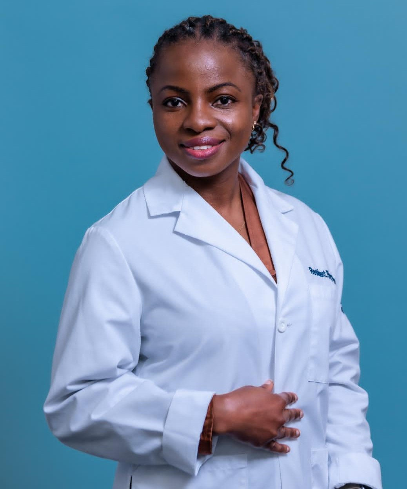
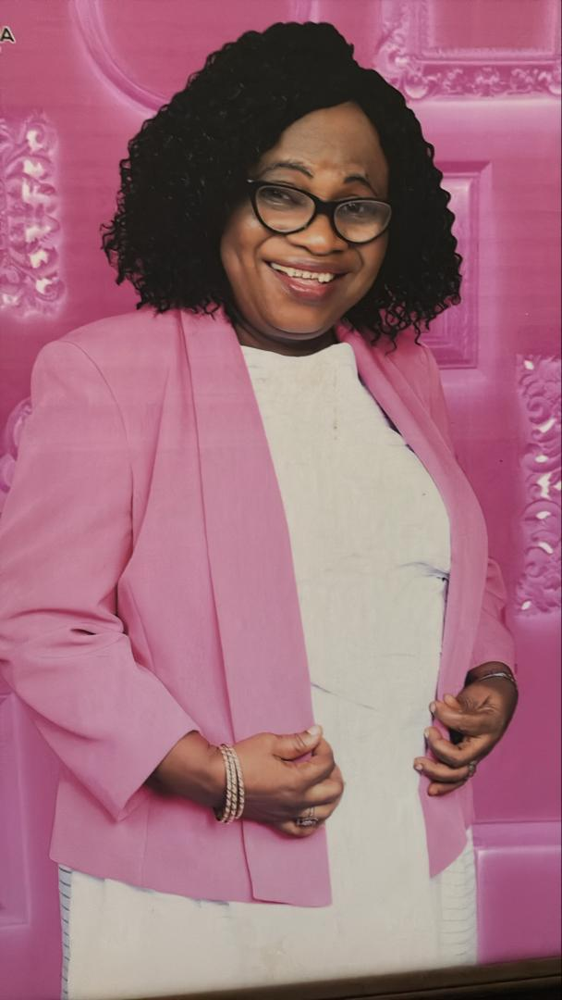

Dr Oyinkansola Tayo is a double board-certified Physician in Internal Medicine and Nephrology.
She graduated from the University of Ibadan in 2013, then proceeded to the United States for Internal Medicine Residency at Cook County Health, Chicago, Illinois. Thereafter, she obtained a Nephrology Fellowship at Emory University Hospital, Atlanta, Georgia.
She is compassionate about patient care and believes that service to mankind is a service to God.

Dr Moradeyo Ajiboye (nee Fakayode) is our Medical Director. She is a product of the Nigerian Premier University, University of Ibadan. She graduated brilliantly with the MBBS degree in July 1981. She had her housemanship at the University of Ilorin Teaching Hospital from July 1981 to June 1982. She was posted to Lagos State for her NYSC which she did from 1982 to 1983.
Dr. Ajiboye briefly worked at the Layori Hospital, Gbagada, Lagos under the supervision of the famous Dr. Bali from 1983 to 1984. An erudite scholar and a great lover of patients, Dr. Ajiboye joined the services of the Lagos State Government in 1984. She worked with the Lagos State Government for a span of 12 years. During the period, Dr. Ajiboye served in various Lagos State Hospitals namely: General Hospital, Gbagada, General Hospital, Ikeja (now Lagos State University Teaching hospital, Ikeja), Massey Street Hospital, Lagos, and Randle General Hospital, Surulere.
After a decade plus (12 years) of an excellent service to humanity under Lagos State Government, Dr. Ajiboye retired in July 1996 to begin her own private business - Lead Hospital - in July 1996. She believes in service before money and works for the wellbeing of her patients.